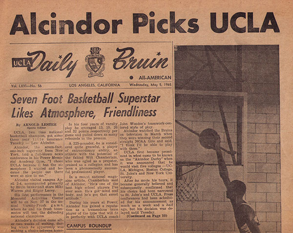

The Daily Bruin Archive

UCLA Daily Bruin is the student newspaper at UCLA, published by and for UCLA students.https://archive.org/ - online versions of microfilm reels; search term: UCLA Daily Bruin. Keyword searching is available within each reel
- REEL 1: September 10, 1915 – June 20, 1918 (The Normal Outlook); September 29, 1919 – February 11, 1921 (The Cub Californian)
- REEL 2: February 18, 1921 – March 21, 1924 (The Cub Californian / The California Grizzly (3/21/24)
- REEL 3: March 25, 1924 – February 10, 1926 (The California Grizzly) (orientation horizontal)
- REEL 4: February 11, 1926 – October 21, 1926 (The California Grizzly) October 22, 1926 - February 16, 1927 (The Daily Bruin)
- REEL 5: February 27, 1927 – January 11, 1928
- REEL 6: January 12, 1928 – January 18, 1929
- REEL 7: February 11, 1929 – November 22, 1929
- REEL 8: November 25, 1929 – October 9, 1930 (orientation horizontal)
- REEL 9: October 10, 1930 – September 16, 1931
- REEL 10: September 17, 1931 – September 30, 1932
- REEL 11: October 3, 1932 – August 1, 1933
- REEL 12: August 4, 1933 – May 11, 1934
- REEL 13: May 14, 1934 – April 26, 1935 (orientation horizontal)
- REEL 14: April 29, 1935 – March 9, 1936
- REEL 15: March 10, 1936 – January 5, 1937
- REEL 16: January 6, 1937 – November 11, 1937
- REEL 17: November 12, 1937 – December 2, 1938
- REEL 18: December 5, 1938 – December 11, 1939
- REEL 19: February 15, 1940 – November 7, 1940 (orientation horizontal)
- REEL 20: November 8, 1940 – December 1, 1941 (orientation horizontal)
- REEL 21: December 2, 1941 – February 17, 1943
- REEL 22: February 18, 1943 – January 22, 1945 (orientation horizontal)
- REEL 23: January 24, 1945 – May 20, 1946 (orientation horizontal)
- REEL 24: May 21, 1946 – October 3, 1947 (orientation horizontal)
- REEL 25: October 6, 1947 – October 21, 1948
- REEL 26: October 22, 1948 – September 22, 1949
- REEL 27: September 23, 1949 – August 8, 1950
- REEL 28: September 13, 1950 – March 15, 1951
- REEL 29: March 16, 1951 – March 19, 1952
- REEL 30: March 20, 1952 – March 19, 1953 (orientation horizontal)
- REEL 31: March 20, 1953 – March 25, 1954
- REEL 32: March 26, 1954 – March 25, 1955
- REEL 33: March 28, 1955 – March 28, 1956 (poorly filmed – incomplete articles)
- REEL 34: April 2, 1956 – March 14, 1957 (orientation horizontal)
- REEL 35: March 15, 1957 – March 18, 1958
- REEL 36: March 19, 1958 – March 5, 1959
- REEL 37: March 6, 1959 – March 2, 1960
- REEL 38: March 3, 1960 – February 10, 1961
- REEL 39: February 15, 1961 – November 30, 1961
- REEL 40: December 1, 1961 – September 27, 1962
- REEL 41: September 28, 1962 – April 30, 1963
- REEL 42: May 1, 1963 – March 20, 1964
- REEL 43: March 31, 1964 - February 16, 1965
- REEL 44: February 17, 1965 – November 2, 1965
- REEL 45: November 3, 1965 – April 29, 1966
- REEL 46: May 2, 1966 – February 6, 1967
- REEL 47: February 7, 1967 – November 29, 1967
- REEL 48: November 30, 1967 – May 2, 1968
- REEL 49: May 7, 1968 – November 22, 1968
- REEL 50: November 25, 1968 – May 12, 1969
- REEL 51: May 13, 1969 – November 17, 1969
- REEL 52: November 18, 1969 – April 23, 1970
- REEL 53: April 24, 1970 – September 10, 1970
- REEL 54: September 29, 1970 – December 11, 1970
- REEL 55: January 6, 1971 – March 12, 1971
- REEL 56: March 31, 1971 – September 9, 1971
- REEL 57: September 28, 1971 – December 3, 1971
- REEL 58: January 5, 1972 – March 3, 1972
- REEL 59: March 29, 1972 – September 9, 1972
- REEL 60: September 18, 1972 – November 22, 1972
- REEL 61: January 8, 1973 – June 1, 1973
- REEL 62: June 15, 1973 – November 30, 1973
- REEL 63: January 7, 1974 – April 30, 1974
- REEL 64: May 1, 1974 – October 31, 1974
- REEL 65: November 1, 1974 – December 4, 1974
- REEL 66: January 6, 1975 – April 16, 1975
- REEL 67: April 17, 1975 - October 1, 1975
- REEL 68: October 2, 1975 – December 3, 1975
- REEL 69: January 7, 1976 – March 12, 1976
- REEL 70: April 5, 1976 – September 9, 1976
- REEL 71: September 21, 1976 – December 6, 1976 (orientation horizontal)
- REEL 72: January 6, 1977 – March 11, 1977
- REEL 73: April 4, 1977 – September 13, 1977
- REEL 74: September 20, 1977 – December 5, 1977
- REEL 75: January 9, 1978 – March 10, 1978
- REEL 76: April 3, 1978 – September 14, 1978
- REEL 77: September 19, 1978 – December 4, 1978
- REEL 78: January 8, 1979 – March 9, 1979
- REEL 79: April 2, 1979 – September 10, 1979
- REEL 80: September 18, 1979 – December 3, 1979
- REEL 81: January 7 1980 – March 7, 1980
- REEL 82: March 31, 1980 – September 12, 1980
- REEL 83: September 23, 1980 – December 4, 1980
- REEL 84: January 12, 1981 – March 13, 1981
- REEL 85: April 6 – September 3, 1981
- REEL 86: September 22 – December 2, 1981
- REEL 87: January 11- March 12, 1982
- REEL 88: April 5 – June 4, 1982
- REEL 89: June 28 – August 30, 1982
- REEL 90: September 28 – December 8, 1982
- REEL 91: January 10 – March 11, 1983
- REEL 92: April 4 – June 3, 1983
- REEL 93: June 27 – August 29, 1993
- REEL 94: September 27 – December 7, 1983
- REEL 95: December 27, 1983 – March 9, 1984
- REEL 96: April 2 – June 1, 1984 –
- REEL 97: June 21 – August 29, 1984
- REEL 98: September 25 – December 6, 1984
- REEL 99: January 7 – March 14, 1985
- REEL 100: April 1 – June 6, 1985
- REEL 101: June 24 – August 26, 1985
- REEL 102: September 24 – December 5, 1985
- REEL 103: January 1 – March 20, 1986
- REEL 104: April 2 – April 22, 1986
- REEL 105: April 23 – June 22, 1986
- REEL 106: June 30 – August 28, 1986
- REEL 107: September 23 – December 4, 1986
- REEL 108: January 5 – March 12, 1987
- REEL 109: March 30 – June 14, 1987
- REEL 110: June 22 – August 27, 1987
- REEL 111: September 22 – November 2, 1987
- REEL 112: November 2, 1987 – December 3, 1987
- REEL 113: January 4 – March 10, 1988
- REEL 114: March 28 – April 29, 1988
- REEL 115: May 2 – June 3, 1988
- REEL 116: June 27 – September 1, 1988
- REEL 117: September 26 – October 21, 1988
- REEL 118: October 24 – December 8, 1988 (Reel digitized in reverse order – starts in December)
- REEL 119: January 9 – February 8, 1989
- REEL 120: February 9 – March 16, 1989
- REEL 121: April 3 – 17, 1989
- REEL 122: April 18 – June 8, 1989
- REEL 123: June 26 – August 31, 1989
- REEL 124: September 25 – October 31, 1989 (Reel digitized in reverse order – starts in December)
- REEL 125: November 1 – December 7, 1989
- REEL 126: January 8 – February 14, 1990
- REEL 127: February 15 – March 15, 1990
- REEL 128: April 2 – 27, 1990
- REEL 129: April 30 – June 7, 1990
- REEL 130: June 25 – August 30, 1990
- REEL 131: September 24 – October 26, 1990
- REEL 132: October 29 – December 6, 1990
- REEL 133: January 7 – March 14, 1991
- REEL 134: April 1 – Mary 8, 1991
- REEL 135: May 9 – June 14, 1991
- REEL 136: June 24 – August 29, 1991
- REEL 137: September 23 – October 31, 1991
- REEL 138: November 1 – December 5, 1991
- REEL 139: January 6 – February 5, 1992
- REEL 140: February 6 – March 13, 1992
- REEL 141: March 30 – May 11, 1992
- REEL 142: May 12 – June 13/14, 1992
- REEL 143: June 22 – August 24, 1992
- REEL 144: September 21 – October 30, 1992
- REEL 145: November 2 – December 3, 1992
- REEL 146: January 11 – March 18, 1993
- REEL 147: April 5 – May 4, 1993
- REEL 148: May 5 – June 10, 1993
- REEL 149: June 28 – August 30, 1993
- REEL 150: September 27 – October 29, 1993
- REEL 151: November 1 – December 9, 1993
- REEL 152: January 10 – March 17, 1994
- REEL 153: April 4 – May 4, 1994
- REEL 154: May 5 – June 19, 1994
- REEL 155: June 27 – August 29, 1994
- REEL 156: September 26 – October 31, 1994
- REEL 157: November 1 – December 8, 1994
- REEL 158: January 9 – February 10, 1995
- REEL 159: February 13 – March 16, 1995
- REEL 160: April 3 – May 19, 1995
- REEL 161: May 22 – June 18, 1995
- REEL 162: June 26 – September 3, 1995
- REEL 163: September 25 – November 9, 1995
- REEL 164: November 10 – December 7, 1995
- REEL 165: January 8 – 30, 1996
- REEL 166: February 1 – March 14, 1996
- REEL 167: April 1 – June 16, 1996
- REEL 168: June 24 – September 1, 1996
- REEL 169: September 23 – December 5, 1996
- REEL 170: January 6 – March 13, 1997
- REEL 171: March 31 – June 9, 1997
- REEL 172: June 30 – August 31, 1997
- REEL 173: September 22 – October 20, 1997
- REEL 174: October 21 – December 4, 1997
- REEL 175: January 12 – February 17, 1998
- REEL 176: February 18 – March 19, 1998
- REEL 177: April 6 – June 19, 1998
- REEL 178: June 29 – August 31, 1998
- REEL 179: September 28 – December 14, 1998
- REEL 180: January 11 – March 18, 1999
- REEL 181: April 5 – June 18, 1999
- REEL 182: June 28 – September 3, 1999
- REEL 183: September 24 – October 29, 1999
- REEL 184: November 1 – December 13, 1999
- REEL 185: January 10 – March 16, 2000
- REEL 186: April 3 – June 16, 2000
- REEL 187: June 30 – September 1, 2000
- REEL 188: September 25 – October 20, 2000
- REEL 189: January 8 – March 15, 2001
- REEL 190: April 2 – June 11, 2001
- REEL 191: June 25 – September 12, 2001
- REEL 192: September 23 – October 31, 2001
- REEL 193: November 1 – December 10, 2001
- REEL 194: January 7 – March 14, 2002
- REEL 195: April 1 -30, 2002
- REEL 196: May 1 – June 10, 2002
- REEL 197: June 24 – September 11, 2002
- REEL 198: September 26, 2002 – October 18, 2002
- REEL 199: October 21 - December 9, 2002
The Daily Bruin went online in Fall Quarter, 1994: http://dailybruin.com/